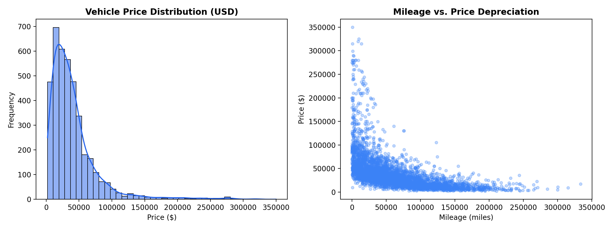

Used Car Price Prediction Using Machine Learning
An empirical comparison of baseline, linear and tree-ensemble models for used-car listing prices.
1. The question and problem formulation
In secondary automotive markets, vehicle pricing is notoriously volatile. Unlike new cars sold at fixed MSRP, used car transactions depend heavily on cumulative wear, brand reputation, chronological age, and prior damage history.
Target Variable
price: Continuous positive value in USD ($), representing the advertised resale asking price.
Unit of Observation
One distinct used passenger vehicle advertisement listed on a secondary resale platform (Cars.com).
Core Research Question: Can observable pre-purchase vehicle attributes (brand, odometer mileage, model age, fuel type, transmission, and damage history) predict market resale value, and do non-linear tree models outperform linear depreciation baselines?
Scope: This study models price correlations from listing data. It does not assert causal rules and does not account for unrecorded mechanical wear or private negotiation outcomes.
2. The data and quality audit
The dataset is sourced from Kaggle (Taeef Najib, 2024 — originating from Cars.com), containing 4,009 raw observations and 12 columns: brand, model, model_year, milage, fuel_type, engine, transmission, ext_col, int_col, accident, clean_title, and price.
| Variable | Raw Format | Issue | Resolution |
|---|---|---|---|
price |
String "$10,300" | Text with $ and commas; placeholder entries below $1,000 | Stripped symbols, cast to float, dropped rows with price < $1,000 |
milage |
String "51,000 mi." | Contains "mi." suffix and commas | Stripped suffix and commas, cast to numeric float |
model_year |
Integer 2013 | Calendar year does not measure age directly | Engineered car_age = 2026 − model_year |
accident |
Free-form text | Sentences describing accident history | Converted to binary flag: 1 = accident reported, 0 = clean |
brand |
Categorical (many brands) | High cardinality; rare brands have few samples | Top 15 volume brands one-hot encoded; all others → "Other" |
fuel_type / transmission |
Categorical text | Non-standard labels across listings | Harmonized: Automatic vs Manual; standard fuel categories |
engine, model, ext_col, int_col, clean_title |
Mixed text / categorical | engine and model: high-cardinality free text with no standardized encoding; colour and title columns: low variance or missing for many rows | Dropped from feature set. Including raw engine text or 1,000+ model strings would introduce more noise than signal for a dataset of this size. |
Cleaning summary: 26 rows removed — rows with price < $1,000 or missing required fields. No duplicate rows were found. Final cleaned dataset: 3,983 observations (4,009 → 3,983). Missing values were handled by row-dropping, not imputation. Extreme high-price listings (above $200k) were retained but are flagged as outliers in the error analysis — they represent exotic and ultra-luxury vehicles that are genuinely hard to predict with the available features.

3. Preprocessing and leakage prevention
A critical requirement in machine learning is preventing test data leakage. If scalers or encoders compute statistics across the whole dataset before splitting, the test set leaks information into training.
random_state=42 before any scaling or encoding was fitted. Duplicate removal was performed before the split.
StandardScalerfitted on training mileage and age only; applied to test using training statistics.OneHotEncoderfitted on training categories only; unseen test categories safely ignored.- Accident binary flag passed directly.
4. Baseline and candidate methods
Four models of increasing expressive capacity were compared:
1. Dummy Regressor (Baseline)
Predicts the training mean for every car. Any useful model must beat this.
2. Simple Linear Regression
Univariate on mileage alone — quantifies how much usage explains.
3. Ridge Regression (L2)
Penalized linear model with all features; handles multicollinearity across one-hot columns.
4. Tree Ensembles (RF & XGBoost)
Bagging and gradient boosting — capture non-linear depreciation and brand interactions.
5. Evaluation design and metrics
Models were evaluated on the 797 holdout test cars using four metrics: MAE (primary — in dollars), RMSE (outlier-sensitive), R² (variance explained), and MAPE (% error).
Why MAE as primary metric: MAE is interpretable in dollar terms and is not inflated by the extreme luxury outliers that exist in this dataset. RMSE penalises those outliers more heavily, which explains why Random Forest (better at avoiding large errors) wins on RMSE even though XGBoost wins on MAE.
Cross-validation and tuning: 5-fold CV was run on the 3,186 training cars only. Hyperparameters (number of estimators, max depth, learning rate for XGBoost; number of estimators and max features for Random Forest) were selected based on CV MAE. The 797 test cars were used exactly once for final reporting — they were never used during training or tuning.
Uncertainty (bootstrap CI): 95% bootstrap confidence intervals (2,000 resamples, seed=42) for test MAE:
- XGBoost: $13,009 – $16,168
- Random Forest: $13,330 – $16,355
These intervals heavily overlap. The two ensembles cannot be clearly separated on this test set. Random Forest actually achieves better RMSE ($26,577 vs $27,047) and R² (0.4633 vs 0.4442). XGBoost is selected as primary because it has a lower MAE, the declared deciding metric, but the difference is within sampling noise.
6. Results and model comparison
Results on the identical 797 holdout test cars:
| Model | MAE ($) ↓ | RMSE ($) ↓ | R² ↑ | MAPE (%) ↓ |
|---|---|---|---|---|
| Dummy Baseline (Mean) | $24,161.53 | $36,300.91 | -0.0013 | 124.04% |
| Simple Linear (Mileage only) | $19,425.80 | $30,556.03 | 0.2906 | 81.38% |
| Ridge Regression (L2) | $17,658.43 | $29,139.80 | 0.3548 | 67.45% |
| Random Forest Regressor | $14,745.80 | $26,576.84 | 0.4633 | 46.17% |
| ★ XGBoost Regressor (Best MAE) | $14,512.50 | $27,046.53 | 0.4442 | 43.44% |
1. Mileage alone explains 29.06% of price variance — the dominant single predictor.
2. Tree ensembles reduce MAE from $24,161 to ~$14,500, roughly 40% lower than the mean baseline.
3. The gap between RF and XGBoost is within bootstrap CI — treat them as equivalent on this dataset.
7. Try the tool (heuristic illustration)
Important: This calculator is a hand-written heuristic for illustration purposes only — it uses simplified brand tiers and depreciation rates, not the trained XGBoost model. The XGBoost model uses 15+ one-hot brand columns and was trained on 3,186 cars; it cannot run in a static browser without exporting the full tree structure. For real model predictions, use the Test Set Explorer below, which shows actual XGBoost outputs on the 797 holdout cars.
Interactive Test Set Explorer (actual XGBoost predictions)
These are the real XGBoost model predictions on the 797 holdout test cars. Filter by price band:
| Brand | Age | Mileage | Actual ($) | XGBoost Pred ($) | Error ($) | Error % |
|---|---|---|---|---|---|---|
| Loading predictions... | ||||||
8. Which specifications matter most?
Impurity-based feature importances from the Random Forest model. Mileage and age together account for approximately 65% of all tree decision splits (summed across all trees in the forest). Note that one-hot brand columns each receive a fraction of the remaining importance — summing all brand dummies gives brand a meaningful share as well.

9. Error diagnosis and residual analysis
Test MAE by price segment (XGBoost, 797 test cars):
| Segment | n | MAE ($) | Median % error |
|---|---|---|---|
| Price < $20k | 262 | $6,002 | 33.1% |
| $20k – $40k | 246 | $12,291 | 29.1% |
| $40k – $75k | 206 | $15,377 | 20.7% |
| > $75k | 83 | $45,816 | 33.0% |
Note: banding by actual price creates selection bias — the >$75k band contains only expensive vehicles by definition, so absolute dollar errors are larger by construction.
In dollar terms errors grow with price, from $6,002 on cheap cars to $45,816 on luxury ones. In percentage terms, the model performs best on mid-range ($40k–$75k) with 20.7% median error. Cheaper cars show higher percentage volatility, likely due to greater relative variability at low price points. The luxury segment under-prediction is consistent with the brand grouping problem described below.

Five worst individual predictions:
| Car | Actual ($) | Predicted ($) | Error ($) | Likely cause |
|---|---|---|---|---|
| Other · 4 yrs · 2,523 mi | $288,900 | $55,677 | +$233,223 | Likely exotic supercar — rare brand hidden in "Other", extreme price with near-zero mileage. |
| Other · 15 yrs · 16,000 mi | $229,000 | $30,814 | +$198,186 | Likely collector or vintage vehicle whose value has appreciated rather than depreciated. |
| Other · 10 yrs · 1,000 mi | $36,000 | $224,102 | −$188,102 | Severe over-prediction likely caused by an extreme near-zero mileage (1,000 mi), possibly a listing error. |
| Other · 10 yrs · 14,770 mi | $254,900 | $77,299 | +$177,601 | Likely ultra-luxury niche vehicle with unrecorded equipment packages or rare trim. |
| Mercedes-Benz · 9 yrs · 23,567 mi | $215,000 | $43,822 | +$171,178 | Likely AMG or Maybach trim — model/trim column was dropped, so the standard series price was used. |
Brand grouping effect: 4 of the 5 worst predictions fall in the "Other" brand bucket. Consolidating exotic and ultra-luxury makes into a single "Other" category erases the most extreme price signals. These vehicles are outliers in both price and rarity; the model systematically underestimates their value. This is a direct consequence of the grouping decision described in Section 2.
10. Limitations
- One marketplace, one time period: Cars.com asking prices in USD — may not reflect sale prices, current market, or other regions.
- Single random split: Results are for
random_state=42only; a different split would give slightly different numbers. - Small dataset: 3,983 cars is modest; differences between RF and XGBoost are within bootstrap CI.
- Missing features: engine, model/trim, colour, service history, condition, and location were not used. Engine and trim are major price drivers — their absence directly limits R².
- Modest explanatory power: R² ≈ 0.45 means over half of price variance is unexplained by available features.
- Rare brand grouping hides price signal: Exotic and ultra-luxury manufacturers were collapsed into "Other", erasing extreme price signals and causing the worst individual errors.
- No log-price transformation: The right-skewed price distribution and large RMSE/MAE gap suggest log-price might improve fit; this was not tested.
- Correlation, not causation: Feature importance describes model structure, not what actually raises or lowers prices.
11. Conclusion
Supervised machine learning extracts meaningful signal from observable vehicle attributes. While a univariate linear model explains only ~29% of price variance, tree ensembles achieve R² ≈ 0.45 and reduce average error to ~$14,512 — roughly 40% below the mean baseline. These results are consistent with non-linear depreciation dynamics that tree models are designed to capture, though the high RMSE and R² below 0.5 show that many price drivers (trim, condition, engine) remain unobserved. Random Forest and XGBoost perform comparably on this test set; neither is clearly superior within bootstrap confidence intervals.
12. Reproduce this work
- Clone:
git clone https://github.com/gouruprakarsha-pixel/Used-car-price-project.git - Install:
pip install -r requirements.txt - Download dataset from Kaggle and place as
used_cars.csvin the repo root. - Run
notebook/Used_Car_Price_Prediction.ipynbtop-to-bottom. All outputs are saved toresults/andassets/.
13. Tools and AI disclosure
AI tools used:
- Google Gemini — HTML/CSS layout scaffolding and site structure drafting.
- ChatGPT — Python code suggestions for data cleaning and sklearn pipeline setup.
- Claude — Text polishing and explanatory writing for sections 1, 5, 9, and 10.
All preprocessing decisions, model training runs, metric calculations, and result interpretations were performed and verified by me. The notebook was executed manually and outputs were checked against the values reported on this site.
14. References
- Najib, T. (2024). Used Car Price Prediction Dataset. Kaggle. Available at: kaggle.com/datasets/taeefnajib/used-car-price-prediction-dataset. Data originally sourced from Cars.com.
- Pedregosa, F., et al. (2011). Scikit-learn: Machine Learning in Python. Journal of Machine Learning Research, 12, 2825–2830.
- Chen, T., & Guestrin, C. (2016). XGBoost: A Scalable Tree Boosting System. Proceedings of the 22nd ACM SIGKDD International Conference, pp. 785–794.